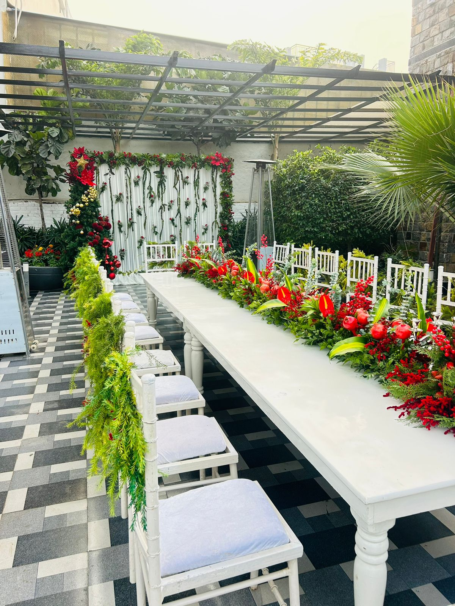
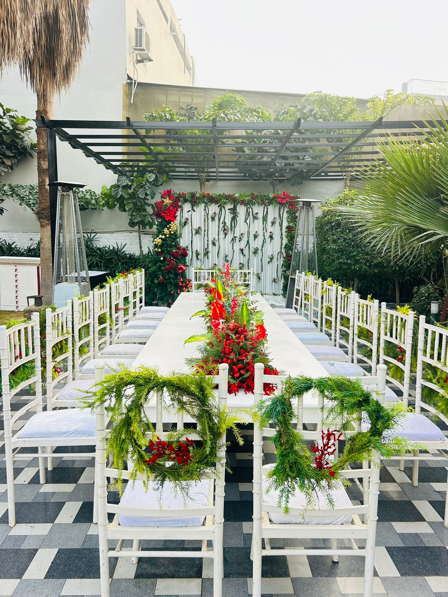
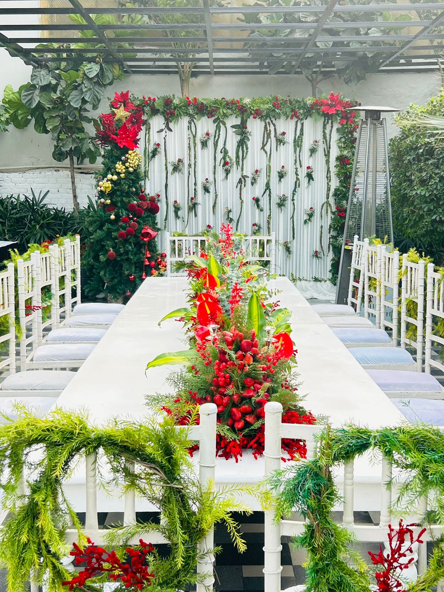

Sagai & Ring Ceremony Flower Decoration in Ghaziabad | Raj Nagar Extension

Professional flower decoration services by Sharma Flower Decorators - Sagai Mangni Flower Decoration
We recently completed a beautiful Sagai–Mangni (Ring Ceremony) flower decoration for a lovely family in Raj Nagar Extension, Ghaziabad. The decoration included a stylish backdrop, ring ceremony stage, and table flower pots, designed perfectly for photos and rituals. Our goal was to create an elegant setup that matched the happiness of the special occasion.

Sagai Mangni Flower Decoration Service in Ghaziabad
The customer first contacted us for ring ceremony decoration services in Ghaziabad. We met them directly at the event location in Raj Nagar Extension. During the meeting, we showed our pamphlet and images of our previous flower decoration work in Ghaziabad and Noida. We carefully understood their requirements and suggested the best decoration theme within their budget, without compromising on quality.

Ring Ceremony Backdrop and Table Pot Flower Decoration
For this Sagai function decoration, we used a mix of artificial flowers and fresh flowers. The fresh flowers included roses, marigold (genda), orchids, lilies, and carnations, while premium artificial flowers were used for long-lasting beauty. The color combination was soft and elegant, making the ring ceremony stage look classy and attractive.

Ring Ceremony Stage Backdrop Flower Decoration
Our experienced decoration team reached the location on time and completed the entire setup in 2 to 3 hours. We managed everything smoothly, from backdrop installation to table flower pots and stage detailing. The decoration was completed well before the function started, and the customer was very happy and satisfied with our service.
We are proud to be a top-rated flower decoration service in Ghaziabad and Greater Noida West. We specialize in Sagai, Mangni, Ring Ceremony, Engagement, and Home Function flower decoration. If you are looking for a reliable and budget-friendly flower decorator in Ghaziabad, Noida, or Greater Noida West, we are always ready to make your event special and memorable.